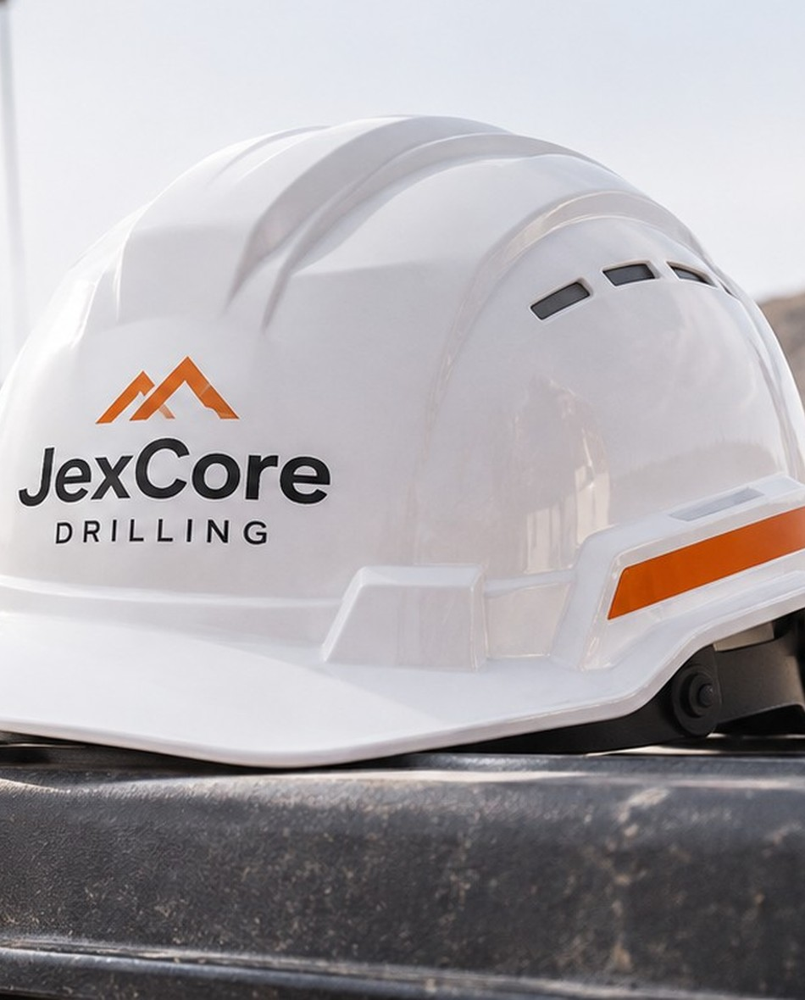
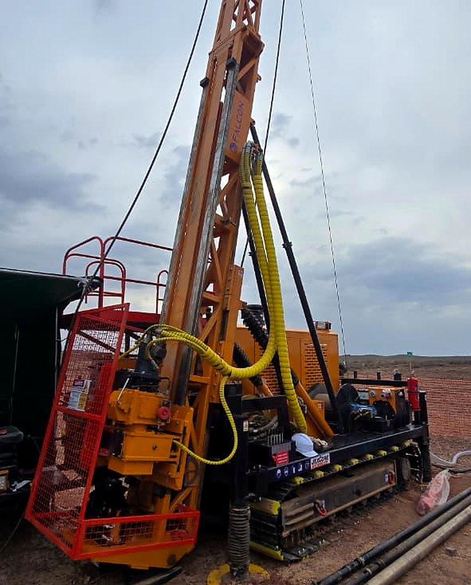
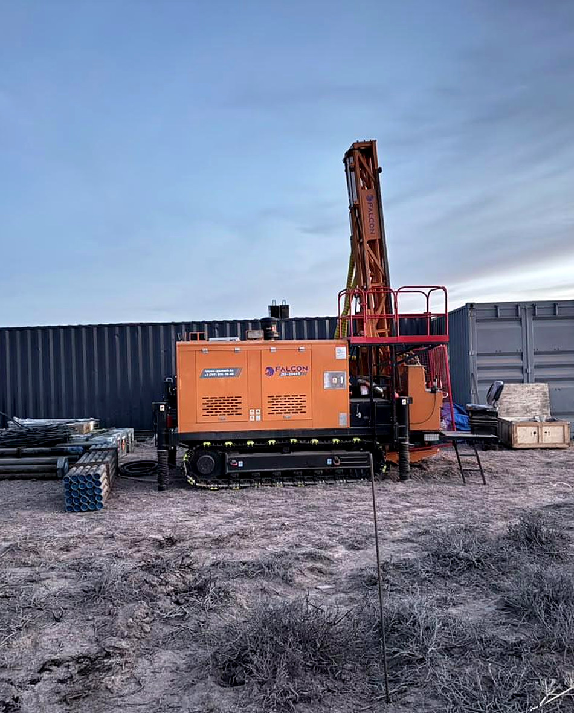
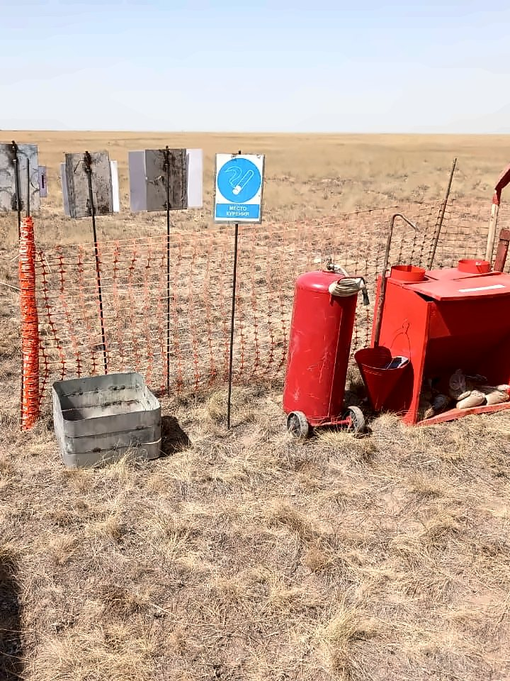
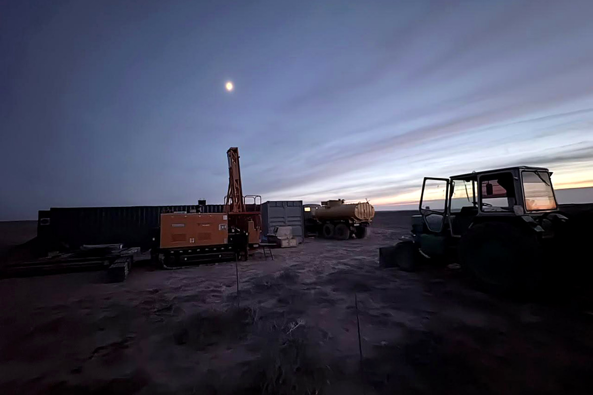
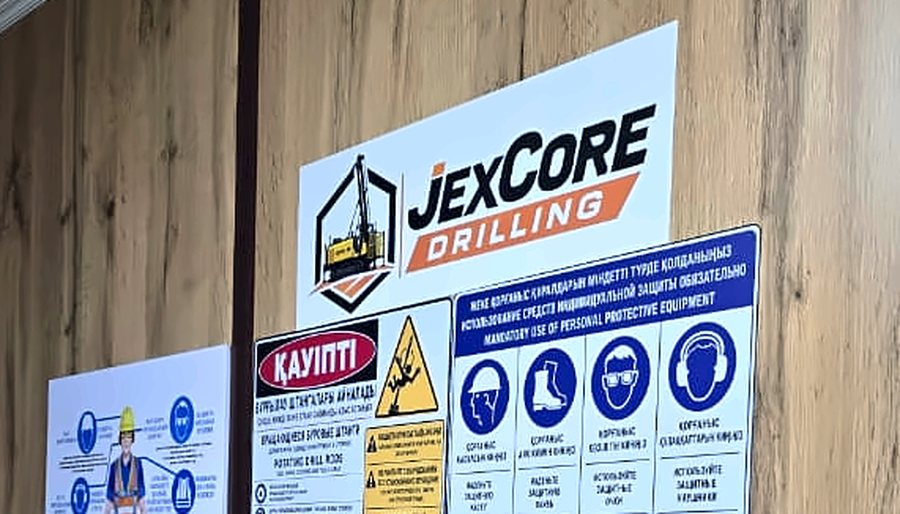
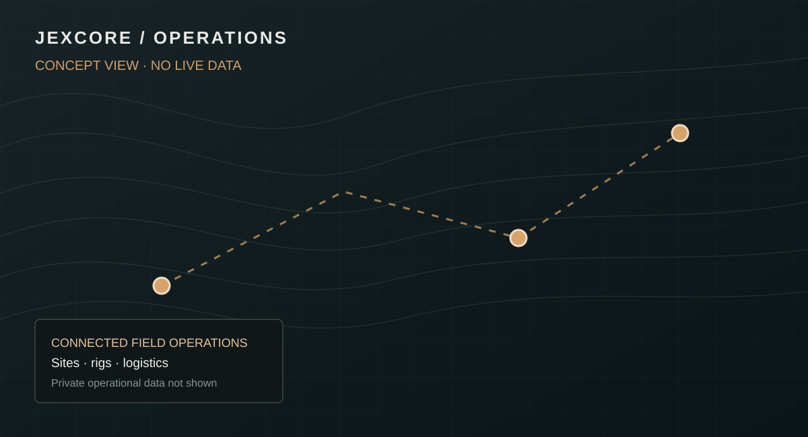

Операционная готовность
Буровые программы, мобилизация, зимняя эксплуатация, керновое хозяйство и сопровождение работ.
JexCore Drilling — буровая компания полного цикла, созданная командой опытных буровиков для выполнения проектов любой сложности.
погонных метров бурения за 2026 год*
контролируемых документов и рабочих инструментов HSE
уровня полевой связи: база, буровые и транспорт
дорожная карта цифровизации и энергоэффективности
Мы выстраиваем операционную платформу, где инженерия, безопасность, контроль качества и цифровая связь работают как единая система.
В 2026 году команда JexCore обеспечивала буровые работы для Mogotes Metals, приступила к программе с Pallas Resources и внедрила корпоративную систему HSE. Следующий этап — масштабирование этого стандарта на новые объекты.
Посмотреть план развитияБуровые программы, мобилизация, зимняя эксплуатация, керновое хозяйство и сопровождение работ.
Единая система процедур, обучение по рискам, технические защиты и готовность к инцидентам.
Starlink и GPS уже поддерживают связь в поле. Переходим к единой карте операций и инструментам удалённого контроля.
Комплексные буровые программы с единым стандартом качества, производственной дисциплины и HSE.
Разведочные скважины HQ / NQ / BQ и программы со специальными требованиями к диаметру, глубине и отбору керна.
ОСНОВНОЕ НАПРАВЛЕНИЕМобилизация, логистика, буровые лагеря, техническое сопровождение, работа с керном и ежедневная отчётность.
ДЕЙСТВУЮЩАЯ КОМПЕТЕНЦИЯРазвитие RC-направления: подбор установки и конфигурации под программы заказчиков в 2027 году.
ПЛАНИРУЕМОЕ НАПРАВЛЕНИЕУказаны модели, задействованные или рассматриваемые в операционном парке; доступность и конфигурация подтверждаются под проект.
В 2026 году JexCore подготовила, утвердила и внедрила комплексную систему охраны труда, промышленной и экологической безопасности. Мы показываем масштаб системы, не раскрывая внутренние процедуры.
управляемых HSE-документов и практических инструментов
ВНЕДРЕНО В 2026Утверждённые правила, контроль документов, подготовка работ и обучение персонала в соответствии с рисками.
Защитные блокировки, ограничители подъёма и автоматическое пожаротушение на оснащённых установках. Единый стандарт для парка — следующий шаг.
Медицинская поддержка, первая помощь, резервные каналы связи и определённый порядок эскалации происшествий.




Операционная HSE-система внедрена. Дальнейшая унификация защит и оснащения буровых входит в план 2027 года.
Запросить информацию для HSE-проверкиStarlink и Garmin GPS создают связанный контур работы в поле. Следующий этап — единый интерфейс для объектов, техники, связи и отчётности.
Спутниковая связь на базе, установках и полевом транспорте.
GPS, маршруты и единая операционная карта — поэтапное развитие.
Документированные процессы и понятная отчётность в согласованном с клиентом формате.
Шесть принципов, один вектор: сделать удалённые проекты более управляемыми, безопасными и ресурсосберегающими.
Система документов, тренинги, средства безопасности, Starlink и Garmin GPS в полевых операциях.
Карта операций, GPS объектов, одна камера по запросу, базовая оценка расхода топлива и генераторных часов.
Измерение нагрузки лагеря, smart metering и пилот гибридного питания для вспомогательных потребителей. Дизель сохраняется как резерв.
Стандартизация доказавших эффективность решений: подключённый объект, измеряемая эффективность, снижение удельных выбросов.
Мы укрепляем корпоративное управление через документированные операционные процедуры, стандарты HSE и регулярную отчётность для заказчика.
Прозрачность начинается на объекте: заказчик видит буровую, лагерь, медпункт и технику такими, какие они есть, а сводки бурения получает после каждой смены.
Независимый аудит финансовой отчётности и публикация подтверждённых показателей рассматриваются как следующий этап развития. Неаудированные финансовые данные на сайте не публикуются.
Ключевые этапы работы и развития компании. Для официальной публикации новости проходят согласование.

Рост буровых операций и укрепление работы с международными заказчиками.

Завершён этап подготовки и внедрения корпоративной системы HSE.

Развитие цифровой карты операций и пилот энергоэффективного полевого лагеря.
Раздел содержит подготовленные редакционные анонсы. До размещения на действующем сайте тексты и упоминания клиентов подлежат утверждению.
Обсудим программу бурения, доступность техники, требования HSE и подготовку к мобилизации.
г. Алматы, пр. Аль-Фараби, 7к5а, 29 этаж, офис 338